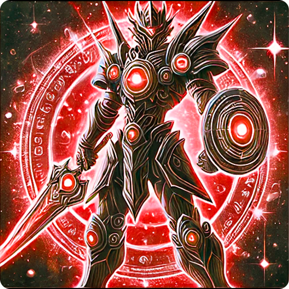

-
Cosmus Sentinel, Guardião das Galáctico
Este imponente guerreiro cibernético é a personificação da harmonia entre tecnologia avançada e energia cósmica. Empunhando o Cetro Estelar, Cosmos Sentinel pode manipular o espaço-tempo, anulando ataques e fortalecendo aliados.
ATK/ 2800 DEF/ 2500 -
Nebuladragon, o Ser das Estrelas Eternas

Uma criatura mítica nascida da fusão de nebulosas e energia estelar. Com suas escamas cristalinas, Nebuladragon canaliza o poder do cosmos, devastando seus inimigos com rajadas de energia pura. Diz-se que ele aparece apenas em momentos de caos universal, como arauto de renovação e equilíbrio celestial.
ATK/ 3200 DEF/ 2000 -
Cyberblade Paladin, o Cavaleiro Digital

Armado com a lendária Cyberblade, este cavaleiro cibernético é um protetor das dimensões digitais. Com reflexos aprimorados e um senso de justiça inabalável, ele combate invasores que ameaçam o equilíbrio dos mundos virtuais e reais. Sua espada emana um brilho tecnológico que pode cortar tanto matéria física quanto código digital.
ATK/ 2600 DEF/ 2300 -
Mechadragon X, o Destruidor Biomecânico

Uma fusão mortal de biologia dracônica e engenharia cibernética, Mechadragon X foi criado para ser uma arma definitiva. Com suas asas energizadas e múltiplos núcleos de poder, ele é capaz de disparar rajadas devastadoras e neutralizar até os mais fortes adversários. Sua presença no campo de batalha é um presságio de destruição iminente, conhecido como o "Fim das Eras".
ATK/ 3500 DEF/ 3000 -
Archmage Stellarion, o Guardião das Estrelas

Um mago enigmático que manipula as forças do cosmos para proteger o equilíbrio universal. Archmage Stellarion utiliza seu Cetro Cósmico para canalizar feitiços de luz estelar, podendo banir inimigos para dimensões distantes ou fortalecer aliados com energia astral. Sua presença no campo de batalha é envolta em mistério e poder, sendo reverenciado como o "Sábio do Infinito".
ATK/ 2400 DEF/ 2600 -
Aegis Knight, o Guardião do Firmamento

Vestindo uma armadura forjada com fragmentos de estrelas, Aegis Knight é o defensor final das dimensões. Empunhando a Espada Astral e o Escudo Celestial, ele possui o poder de anular ataques inimigos e contra-atacar com golpes de pura energia cósmica. Seu juramento é proteger o equilíbrio entre luz e trevas, sendo lembrado como a "Fortaleza do Cosmos".
ATK/ 3000 DEF/ 2800 -
Stormbringer Dragon, o Arauto das Tempestades

Este poderoso dragão domina os céus, invocando trovões e relâmpagos com o bater de suas asas. Stormbringer Dragon é a personificação da fúria da natureza, destruindo tudo em seu caminho com rajadas elétricas e ventos cortantes. Diz-se que sua aparição é o prelúdio de uma tempestade sem fim, trazendo destruição e renovação aos campos de batalha.
ATK/ 2900 DEF/ 2100